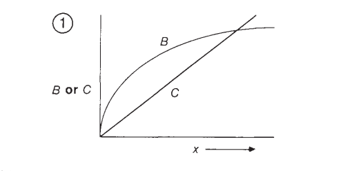
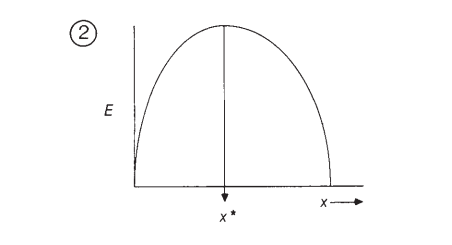
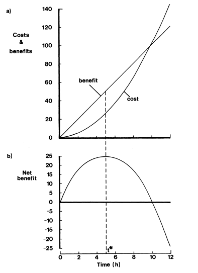

APÉNDICE SOBRE ECOLOGÍA CONDUCTUAL
Introducción elemental a los modelos de optimización de la ecología conductual clásica
La ecología conductual tuvo en sus orígenes un interés estricto en el estudio del valor de supervivencia de las estrategias conductuales. Es decir, responde al segundo “problema principal” de la biología según Huxley como es discutido por Tinbergen (1963). De acuerdo con la lógica seleccionista heredada por los ecólogos conductuales, se asume que las conductas, al igual que los órganos, evolucionan en una especie como uno de sus medios de supervivencia. Por ello, es lógico preguntarse acerca del valor de supervivencia de una conducta en particular.
La semilla de la ecología conductual estuvo ya presente en el trabajo de Tinbergen (1963) cuando estableció los objetivos y métodos de la etología. Al respecto aseveró:
“But life processes also have effects, and the student of survival value tries to find out whether any effect of the observed process contributes to survival if so how survival is promoted and whether it is promoted better by the observed process than by slightly different processes” (Tinbergen, 1963, p. 418).
Lo que esto quiere decir es que quien se interesa por el valor de supervivencia de una conducta, llamémosle etólogo o ecólogo conductual, estudia no solo la forma en que una conducta contribuye a la supervivencia del organismo de una especie dada, sino también si otras conductas alternativas contribuyen mejor o peor. Un caso particular es el de roving vs. sitting en la Drosophila melanogaster, sin embargo, en este caso ya no hablaríamos de “conductas alternativas”, sino de diferentes “estrategias conductuales”. Tanto el roving como el sitting son diferentes estrategias conductuales alimentarias en la D. melanogaster que varían en su contribución a la adecuación biológica en función de las propiedades del entorno, incluyendo a otros miembros de la misma población biológica. Este ejemplo concreto se tocará a mayor detalle en una entrada futura sobre el papel genético en las estrategias conductuales.
La ecología conductual clásica se caracteriza por una forma de proceder tanto teórica como experimental que bebe de la microeconomía para responder preguntas sobre el valor de supervivencia de estrategias conductuales (Lendrem, 1986). Es imposible leer a sus pioneros y sus ideas, como la teoría del forrajeo óptimo, sin encontrar en ellas un claro fundamento en la teoría de juegos y en la teoría de utilidad esperada. Su lenguaje es microeconómico: costos, beneficios, optimización, estrategias y decisiones. No obstante, en vez de hablar de maximización de utilidad, se discute la maximización de la adecuación biológica en diferentes medidas. Por ejemplo, una medida para la adecuación biológica indirecta podría ser el aporte energético en el caso de las estrategias conductuales alimentarias.
Debido a la naturaleza de los modelos de optimización ecológicos, no se puede entender la ecología conductual clásica sin saber un mínimo de cálculo diferencial (Lendrem, 1986). Sin embargo, antes de hablar de derivadas, primero es necesario determinar las variables y estrategias conductuales de interés. Por ejemplo, las aves vanelinas (Vanellinae) buscan comida dando una serie de pasos hasta atisbar insectos en el suelo, momento en que se detienen para comer. Una vez el ave agote los insectos en su campo de visión, esta debe seguir moviéndose para atrapar otros. Una pregunta posible entonces es cuál es la cantidad de pasos óptimos que el ave debería tomar, si actuara económicamente, para maximizar el aporte energético adquirido de sus presas (Parker & Maynard Smith, 1990).
Siguiendo el ejemplo de Parker & Maynard Smith (1990), imaginémonos que el ave solo se mueve unos pasos dentro de su campo de visión original. Entonces, gran parte del suelo que tiene disponible ya lo habría cubierto anteriormente y por lo tanto no estaría adquiriendo un aporte energético significativo. En cambio, cuando la cantidad de movimiento es igual al diámetro de su campo de visión, una cantidad de suelo nuevo está disponible para ser explorado y explotado. Por último, si el ave se moviera una cantidad de pasos mayor al diámetro de este campo de visión, entonces el aporte energético no aumentaría más asumiendo que los insectos estén distribuidos en el suelo de manera homogénea. Es decir, se alcanza una asíntota. Esta relación funcional se ilustra en la Figura 1, donde B corresponde a la curva entre la cantidad de pasos (abscisa) y el beneficio en términos de aporte energético (ordenada).
Figura 1. B: Relación entre número de pasos y aporte energético. Asúmase una función saturante. C: Relación entre número de pasos y costo energético. Función lineal (Parker & Maynard Smith, 1990, p. 28).
No obstante, el tomar una cantidad de pasos implica también un costo energético. La Figura 1 ilustra una función lineal C donde se relaciona el número de pasos en la abscisa con su respectivo costo energético en la ordenada. Es decir, de actuar el organismo como un animal económico, no solo debería maximizar los beneficios biológicos, sino también reducir sus costos. Esto quiere decir que un animal racional actuaría en maximización de los beneficios biológicos netos (la diferencia entre los beneficios y los costos).
Para poder determinar el punto de maximización de una variable, como el número de pasos que deben ser tomados, primero realizamos la ecuación de la adecuación biológica neta tomando en cuenta tanto los beneficios como los costos. En el caso del ave, cada paso aumenta la posibilidad de conseguir presas hasta cierto punto, pero también aumenta linealmente el gasto energético por movimiento. Asumiendo una función B(x) para la relación entre pasos y aporte energético y otra C(x) para pasos y gasto energético, el aporte energético neto E(x) equivaldría a la Ecuación 1 tomada de Parker & Maynard Smith (1990):
A partir de la Ecuación 1, cuya parábola se ilustra en la Figura 2, el punto de optimización es determinado por aquel donde la primera derivada de E(x) sea igual a 0 y la segunda derivada de E(x) sea menor a 0, como se ilustran en las Ecuaciones 2 y 3 (Parker & Maynard Smith, 1990).
Figura 2. Parábola de la función E(x) con un máximo local cuya segunda derivada con valor negativo determina el valor óptimo para el número de pasos (Parker & Maynard Smith, 1990, p. 28).
Es decir, si el animal actúa de manera económica, la cantidad de pasos que debe tomar al forrajear debería ser igual a la predicha por el modelo en el punto de optimización donde se satisfacen las ecuaciones 2 y 3.
En un ejemplo trabajo de Lendrem (1986), imaginemos el caso hipotético e idealizado de la conducta de un animal que duerme una cierta cantidad de tiempo t medido en horas (h). En este caso, la cantidad de horas dormidas se relaciona con un beneficio biológico de acuerdo a una función B(t). El B(t) de dormir por t horas puede tomarse como una función lineal de acuerdo a la Ecuación 4 tomada del mismo autor:
B(t) implica un conjunto continuo de estrategias conductuales donde la estrategia implica dormir t cantidad de horas, donde t puede tomar cualquier valor real. Cabe resaltar que no todos los modelos necesitan estrategias conductuales continuas pues, como lo comentan Parker & Maynard Smith (1990), el conjunto de estrategias que las aves "pueden escoger" para dónde anidarse es uno discreto compuesto por alternativas como anidarse en un árbol o en el suelo. Este conjunto de estrategias, en nuestro caso continuo, especifica las alternativas (en términos de estrategias conductuales) plausibles.
A través de esto también podemos observar que una estrategia conductual puede diferir de otra para la misma función (como dormir) de diferentes maneras. En esta instancia, nos interesa la conducta de dormir en términos de horas dormidas. Empero, también podría interesarnos otras dimensiones como la de dónde dormir y a qué horas (y no cuántas horas) dormir, entre otras.
Por último, cabe resaltar que la suposición ecológica conductual es que la selección natural, metafóricamente hablando, “opera” sobre este conjunto de estrategias. Es decir, la selección natural actúa sobre los diferentes valores que las estrategias de una conducta exhiben en una población biológica, y aquellas estrategias con parámetros asociados a un mayor beneficio neto se traducen, al menos en principio, en una mayor adecuación biológica que implica un incremento en la frecuencia fenotípica conductual de este parámetro en la misma población.
Como última nota antes de continuar con el modelo idealizado, esto quiere decir que las conductas en la ecología conductual son tratadas como conjuntos de estrategias definidas por una serie de parámetros que varían en los valores que estos pueden tomar. Es decir, partiendo de una conducta como forrajeo en las aves vanelinas, todas las estrategias de forrajeo se caracterizan por parámetros como la cantidad de pasos que las aves toman para moverse de un bout a otro. Otro parámetro es el de la selectividad a diferentes insectos, así como también las horas de alimento y las coordenadas espaciales de muestreo de insectos (es decir, no solo la cantidad de pasos que da, sino dónde da esos pasos). A esto se añade que, ya que se asume que la selección natural puede operar sobre ellos, entonces toda estrategia conductual tiene un componente heredable: bien sea la organización biológica necesaria para manifestarla innatamente o la capacidad para aprender la estrategia dadas las restricciones ecológicas del entorno.
Ahora bien, dormir t horas tienen un costo en adecuación biológica en términos del tiempo que se pierde en otras actividades como comer y reproducirse. Es decir, cada hora que se duerme es una hora que se perdió para aparearse y forrajear. Asumimos, como el autor, una función hipotética para el costo C(t) en la Ecuación 5:
Esto quiere decir que el beneficio neto N(t) será igual a la diferencia entre B(t) y C(t) según la Ecuación 6 (Lendrem, 1986):
La Figura 3 establece las funciones matemáticas de interés en este ejemplo, así como también la función del beneficio neto N(t).
Figura 3. (a) Comparación de las funciones de los costos y beneficios en términos de una unidad arbitraria (u.a.) en la ordenada y la cantidad de tiempo dormido t en horas (h) en la abscisa (Lendrem, 1986, p. 14).
Ahora bien, para determinar el punto de optimización debemos diferenciar N(t), lo cual nos arroja la Ecuación 7:
A partir de la primera derivada de N(t) que hemos descubierto, determinamos el valor de t donde la derivada es igual a 0 según la Ecuación 8:
Despejando con herramientas elementales descubrimos que el punto máximo o mínimo es $t=5$, es decir, de 5 horas (Lendrem, 1986). A partir de ello, para determinar si este es el punto verdaderamente máximo, es decir, si 5 horas maximiza el beneficio neto N(t), debemos determinar la segunda derivada de la función, ilustrada en la Ecuación 9. Recordando que la segunda derivada donde la primera sea igual a 0 debe tener un valor negativo, comparamos:
Es decir, 5 horas efectivamente es la cantidad de tiempo durmiendo que maximiza el beneficio neto adquirido por dormir en relación a sus costos.
El siguiente paso una vez hemos realizado una predicción con este modelo de juguete es observar la conducta de nuestra especie de interés y promediar la cantidad de horas que duermen. Si las observaciones se acomodan a las predicciones, podemos sugerir que las conductas son adaptaciones moldeadas por la selección natural bajo las restricciones ecológicas establecidas en términos de costos. Alternativas en términos de más o menos horas dormidas no fueron seleccionadas (al menos en principio) ya que, en comparación a la alternativa de 5 horas estudiada, esta tiene un beneficio neto mayor que se puede traducir, al menos en principio, a una adecuación biológica más alta en términos de reproducción (Parker & Maynard & Smith, 1990).
En caso de que las predicciones no se apeguen a lo observado, es posible rechazar el modelo a favor de otro. Un rechazo del modelo implica una reevaluación de sus suposiciones, intentando determinar en qué punto podría encontrarse la falla. Puesto que los modelos de optimización realizan predicciones muy precisas a partir de suposiciones normalmente bastante explícitas en relación a otras clases de modelos, es mucho más fácil la revisión de un diseño de optimización que otras clases de hipótesis menos formalizadas.
Habiendo establecido el proceder general de un modelo de juguete, cabe preguntarse toda una serie de cuestiones acerca de lo que estos pueden implicar:
En este espacio se responderán solo las primeras dos preguntas, dejando la última para otra instancia.
Es importante resaltar que, así como los ecólogos conductuales prestaron el aparato matemático de la microeconomía utilitarista, también prestaron sus suposiciones. Los microeconomistas no siempre afirmaron que las personas se comportan de acuerdo a los principios de la utilidad esperada. Existe todo un campo llamado economía conductual dedicado a demostrar que el modelo del agente racional no puede existir mas que como una suposición ideal, ya que no se conforma a lo observado en el comportamiento humano económico. De la misma forma, los ecólogos conductuales no afirman que los animales son económicos o racionales, en cambio, de acuerdo con las palabras de Lendrem (1986), se espera que los animales actúen económicamente sin asumir decisión o deliberación consciente de acuerdo a una serie de ecuaciones o máximas sobre la supervivencia y reproducción propia. De la misma manera que emplear el cálculo para estudiar el movimiento de un cuerpo no implica que ese cuerpo está computando su propia trayectoria ni derivando su lagrangiana, el uso de modelos de optimización tampoco implica que el organismo está decidiendo, elaborando estrategias o calculando adecuación biológica en alguna parte de su cuerpo. La suposición económica viene de la propia selección natural, así como también de la suposición conductual genotípica previamente explicitada. Es decir, se asume que las estrategias conductuales no solo varían en términos de los valores que sus parámetros pueden tomar, sino que tienen además un componente heredable el cual permite que la frecuencia de una estrategia sobre otras en una población cambie en función del tiempo. Así como la selección natural se asume que operó sobre los picos de los pinzones de Darwin, “escogiendo” aquellos más aptos para los tipos de alimentos que las diferentes poblaciones podían forrajear en cada región de los Galápagos, también se afirma que la selección natural puede operar sobre estos componentes heredables de la conducta para cambiar la frecuencia de estas en función de las restricciones ecológicas del entorno. Algunos entornos favorecerán más algunos valores paramétricos que otros, lo cual quiere decir que el entorno moldeará la frecuencia en que se dan estas estrategias conductuales. Tomando en cuenta que la selección ocurre en función de la adecuación biológica, aquellas estrategias conductuales con mayor contribución a esta serán más seleccionadas, razón por la cual se asume que los animales se comportan económicamente, mas no que toman decisiones económicas con respecto a su supervivencia y reproducción.
Por último, con respecto a la segunda pregunta, es necesario recalcar que la optimización es una suposición de los modelos (Lendrem, 1986). Los ecólogos conductuales no están intentando probar que los animales efectivamente optimizan o son optimizadores. En cambio, están asumiendo que la conducta es adaptativa o, de otra manera, está optimizada. Partiendo de esta suposición, los ecólogos conductuales construyen sus modelos sobre estrategias conductuales empleadas por distintas poblaciones y, en la medida en que realizan predicciones exitosas, demuestran que lo que sabemos sobre las estrategias conductuales empleadas por una población biológica son compatibles con una hipótesis adaptacionista bajo las suposiciones explicitadas.
En entradas ulteriores estaremos estudiando no solo una serie de artículos clásicos en ecología conductual para seguir desarrollando nuestro entendimiento de esta perspectiva, sino también otras cuestiones como las dificultades asociadas al enfoque, la posibilidad de la selección natural para optimizar conductas, el carácter genético de las conductas asumido por este, sus fundamentos microeconómicos directamente y algunos problemas conceptuales.
Lendrem, D. (1986). Modelling in behavioural ecology: An introductory text. Timber Press
Parker, G. A., & Maynard Smith, J. (1990). Optimality theory in evolutionary biology. Nature, 348, 27-33. https://doi.org/10.1038/348027a0
Tinbergen, N. (1963). On aims and methods of ethology. Zeitschrift Für Tierpsychologie, 20(4), 410-433. https://doi.org/10.1111/j.1439-0310.1963.tb01161.x
Freddy J. Molero-Ramírez
fmolero@mail.uniatlantico.edu.co